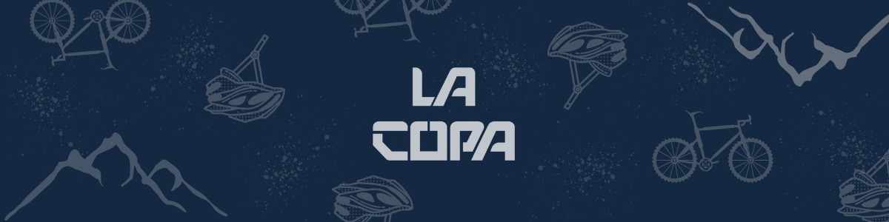
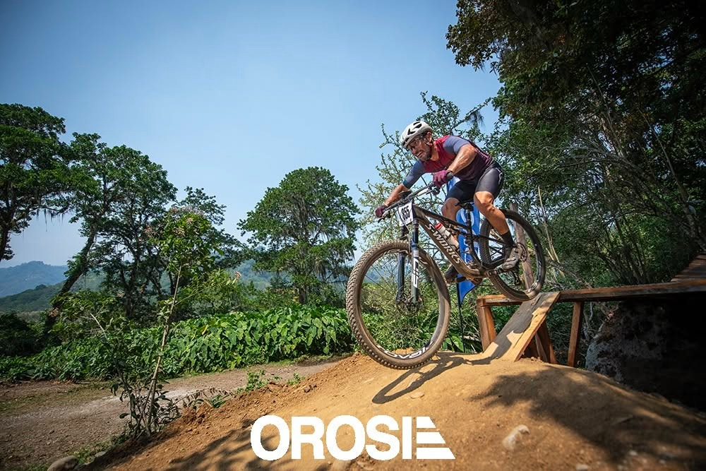
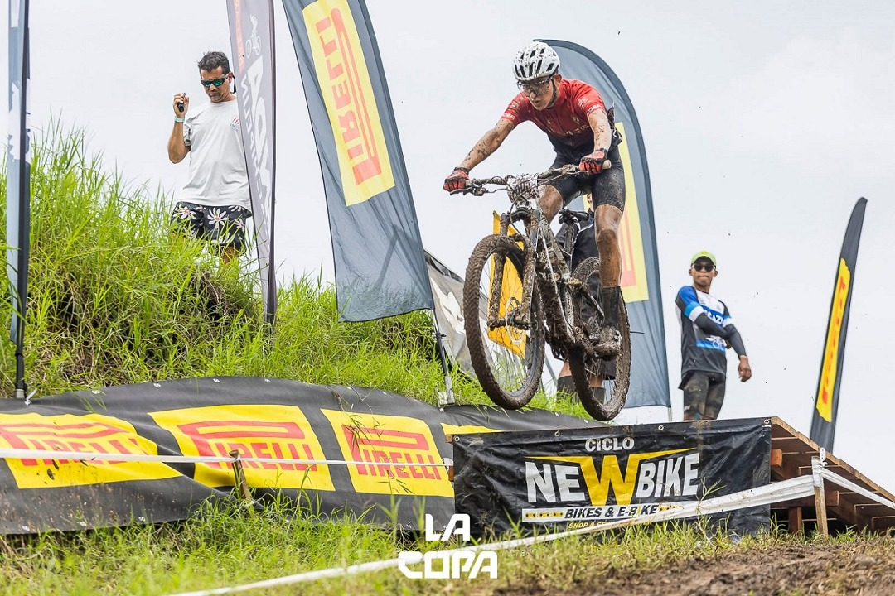
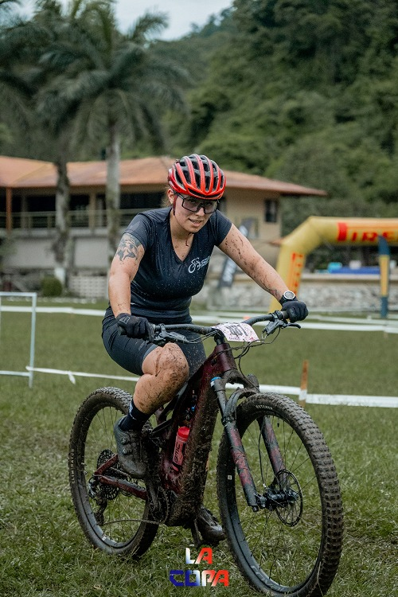
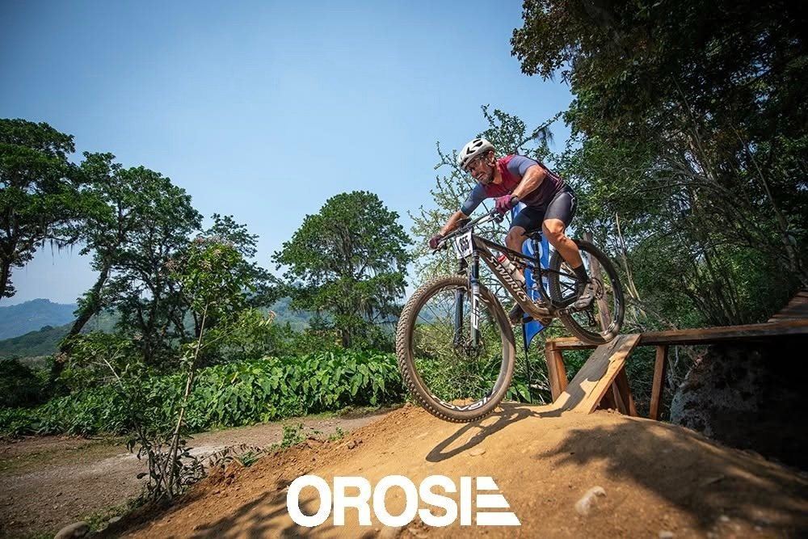

Sobre Nosotros
Conoce nuestra organización
La Asociación de Ciclismo de Montaña CRC tiene su origen en Costa Rica a inicios de la década del 90, con el objetivo principal de fomentar, promocionar y desarrollar el ciclismo de montaña en nuestro país. Los eventos realizados son sin fines de lucro, siendo los principales la Copa Nacional de Ciclismo de Montaña y Campeonato Nacional en el formato Cross Country Olímpico, incluido en el proceso del Ciclo Olímpico.
Uno de los atractivos de la Copa Nacional es que promueve altos valores y principios deportivos, de la mano con el disfrute del deporte y la construcción de un espacio sano y familiar, con participación desde niños de 4 años hasta competidores de más de 50 años.
Misión
Somos una organización sin fines de lucro dedicada a fomentar, desarrollar y promover el ciclismo de montaña en Costa Rica a través de competencias de alto nivel.
Visión
Ser la entidad líder en el desarrollo del ciclismo de montaña en Centroamérica, formando atletas competitivos a nivel internacional.
Valores
Pasión por el deporte, inclusión, integridad, trabajo en equipo, respeto por la naturaleza y compromiso con la excelencia deportiva.
Noticias
Últimas novedades del ciclismo de montaña
Soñadores del MTB
Historias de los protagonistas del ciclismo de montaña costarricense
Soñadores del MTB - Andrey Fonseca
Un corredor de exportación de Buenos Aires de Puntarenas. Ganador de la medalla de oro en los Juegos Centroamericanos en Cross Country Olímpico.
7 Feb 2018Soñadores del MTB - Paolo Montoya
Trae en la sangre la inspiración del apellido Montoya. Participó en la olimpiada Londres 2012, campeonatos mundiales y muchos eventos internacionales.
16 Feb 2018Soñadores del MTB - Jonathan Quesada
Una de las promesas del ciclismo costarricense. «Soñaba algún día estar ahí», decía cuando veía videos de copas del mundo.
23 Feb 2018Soñadores del MTB - Rafael «Chalito» Sánchez
Uno de los fundadores de la Asociación de Ciclismo de Montaña CRC, con más de 40 años en el deporte que lleva en su corazón.
1 Mar 2018Soñadores del MTB - Sigrid Miller
Ciclista en la categoría máster femenino y parte del Equipo de Ciclismo Femenino AVIMIL. Nos da pinceladas de la realidad del ciclismo femenino.
16 Oct 2018
VII Fecha XCO - Gran Final
Sarapiquí
PróximoVII Fecha XCC - Gran Final
Sarapiquí
Próximo
Carreras intensas y llenas de acción en circuitos cortos. Los resultados determinan la posición de salida para la carrera de Cross-country Olímpico (XCO).
El Circuito


Calendario XCC 2026
I Fecha XCC
Finca Grupo Orosi, Paraíso
FinalizadaII Fecha XCC
Parque La Libertad, Desamparados
FinalizadaIII Fecha XCC
Adventure Park, Barva de Heredia
FinalizadaIV Fecha XCC
Finca La Hisopa, Turrubares
FinalizadaV Fecha XCC
Oikoumene
FinalizadaVI Fecha XCC
Finca Grupo Orosi, Paraíso
FinalizadaVII Fecha XCC - Gran Final
Sarapiquí
PróximoCategorías
Modalidades y categorías oficiales
XCC
Cross Country Short Track
Carreras cortas e intensas en circuitos reducidos. Alta velocidad y espectacularidad para los espectadores.
XCO
Cross Country Olympic
La modalidad olímpica del MTB. Circuitos técnicos con subidas y bajadas desafiantes.
XCE
Cross Country Eliminator
Formato de eliminación directa con carreras cortas entre pequeños grupos de ciclistas.
Categorías Oficiales
Menores & Élite
| Categoría | Edades | Género |
|---|---|---|
| Preinfantil | 11-12 años | Masc / Fem |
| Infantil | 13-14 años | Masc / Fem |
| Prejuvenil | 15-16 años | Masc / Fem |
| Juvenil | 17-18 años | Masc / Fem |
| Élite | 19+ años | Masc / Fem |
| Sub-23 | 19-22 años | Masc / Fem |
Máster & Otros
| Categoría | Edades | Género |
|---|---|---|
| Máster A | 30-34 años | Masculino |
| Máster B | 35-39 años | Masculino |
| Máster C | 40-44 años | Masculino |
| Máster D | 45-49 años | Masculino |
| Máster E | 50+ años | Masculino |
| Máster A Fem | 30-39 años | Femenino |
| Máster B Fem | 40+ años | Femenino |
| Open | Todas | Mixto |
| E-Bike | Todas | Mixto |
| Cyclocross | Todas | Mixto |
| Pasados | Todas | Mixto |

La modalidad olímpica del MTB. Los corredores recorren un número determinado de vueltas en circuitos técnicos con subidas y bajadas desafiantes.
El Circuito




Calendario XCO 2026
I Fecha XCO
Finca Grupo Orosi, Paraíso
FinalizadaII Fecha XCO
Parque La Libertad, Desamparados
FinalizadaIII Fecha XCO
Adventure Park, Barva de Heredia
FinalizadaIV Fecha XCO
Finca La Hisopa, Turrubares
FinalizadaV Fecha XCO
Oikoumene
FinalizadaVI Fecha XCO
Finca Grupo Orosi, Paraíso
FinalizadaVII Fecha XCO - Gran Final
Sarapiquí
Próximo
Copa Kids MTB
Formando los campeones del futuro
Seguridad
Circuitos seguros para los participantes
Premiación
Todos reciben medalla y reconocimiento
Inclusión
Categorías para todas las edades
Diversión
Actividades para toda la familia
Categorías Copa Kids
| Categoría | Edades | Género |
|---|---|---|
| Principiantes | 4-5 años | Mixto |
| Pre-Infantil | 6-7 años | Masc / Fem |
| Infantil A | 8-9 años | Masc / Fem |
| Infantil B | 10-11 años | Masc / Fem |
| Juvenil Kids | 12-13 años | Masc / Fem |
Resultados
Copa Nacional de Ciclismo de Montaña 2026
Resultados por fecha
Campeones Nacionales 2026-2027
Copa Nacional de Ciclismo de Montaña
Resultados
Clasificación General
Inscripciones
Copa Nacional de Ciclismo de Montaña 2026
Inscripciones próximamente
Muy pronto abriremos las inscripciones para la próxima fecha. ¡Mantente atento a nuestras redes sociales!
Pago por depósito bancario
- Banco: Banco Nacional de Costa Rica
- Cuenta: Asociación Nacional de Ciclismo de Montaña
- Cédula jurídica: 3-002-172466
- Cuenta corriente: 100-1-054-000890-9
- IBAN (SINPE): CR15015105410010008900
Pago por Sinpe Móvil
Tel: 6349-0950

Inscripciones
Copa Nacional de Ciclismo de Montaña 2026
Próximamente
Las inscripciones para la próxima fecha se abrirán pronto.
Mantente atento a nuestras redes sociales para no perderte la fecha de apertura.
Galería
Momentos de la Copa Nacional MTB 2026
I Fecha
Finca Grupo Orosi
Feb 15-16II Fecha
Parque La Libertad
Mar 22-23III Fecha
Adventure Park, Barva
May 17-18IV Fecha
Finca La Hisopa, Turrubares
Jun 13-14V Fecha
Oikoumene
Jul 19-20VI Fecha
Finca Grupo Orosi, Paraíso
Sep 12-13I Fecha - Finca Grupo Orosi
Febrero 15-16, 2026
II Fecha - Parque La Libertad
Marzo 22-23, 2026
III Fecha - Adventure Park
Mayo 17-18, 2026
IV Fecha
Junio 21-22, 2026
Fotos pendientes de carga.
V Fecha - Oikoumene
Julio 19-20, 2026
Fotos pendientes de carga.
VI Fecha
Septiembre 13-14, 2026
Próximamente.
Contacto
Estamos para ayudarte